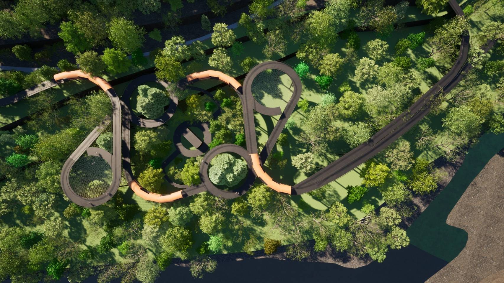

Banggudae Petroglyphs Visitor Centre
This project is located at the Petroglyphs of Bangudae Terrace in Daegok-ri, Ulju. The inspiration for this design came from the concern over the diminishing appeal of this place for future generations. This fear arose during my first visit to the site, where I observed that 90% of the visitors and caretakers were elderly. Therefore, this design aims to revive the site's attraction for younger generations, breathing new life into it. The design approach emerged from the dull walking experience from the museum to the observatory deck to view the petroglyphs.
이 프로젝트는 울주 대곡리 방구대 암각화 테라스에 위치하고 있습니다. 이 디자인의 영감은 미래 세대를 위한 이 장소의 매력이 점점 사라지고 있다는 우려에서 비롯되었습니다. 이 두려움은 제가 처음 현장을 방문했을 때 생겼는데, 당시 방문객과 시설 관리자의 90%가 노인이라는 것을 보았습니다. 따라서 이 디자인은 이곳의 매력을 젊은 세대에게 다시 불러일으켜 이곳에 새로운 활력을 불어넣는 것을 목표로 하고 있습니다. 디자인 접근 방식은 박물관에서 암각화를 보기 위해 전망대로 가는 지루한 보행 경험에서 출발했습니다.
